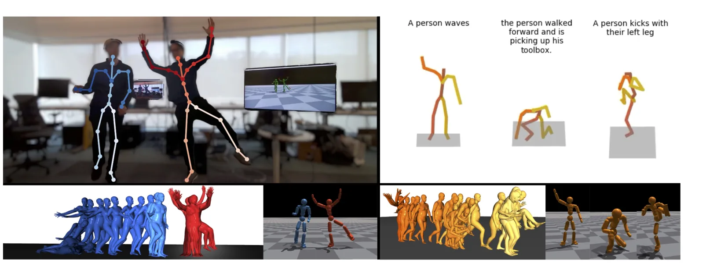
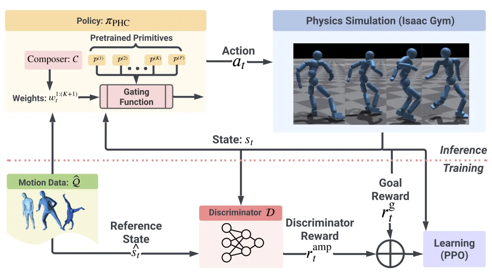
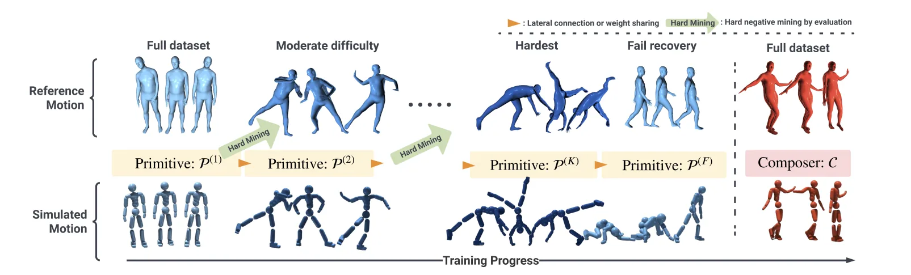
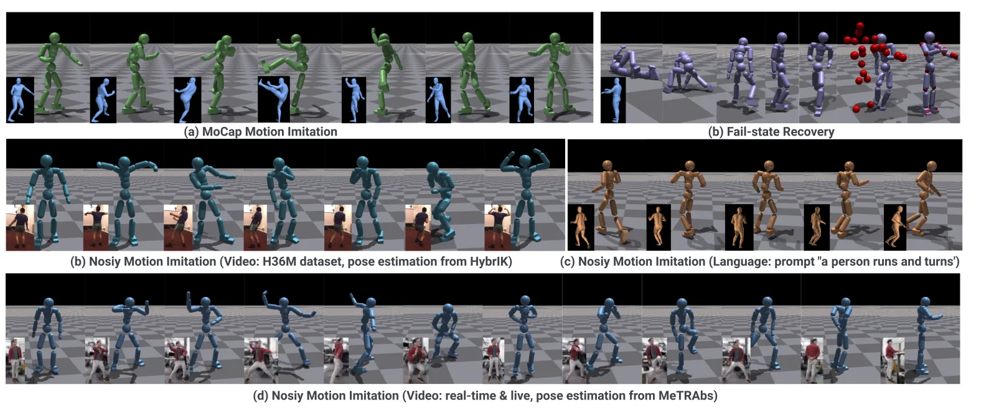
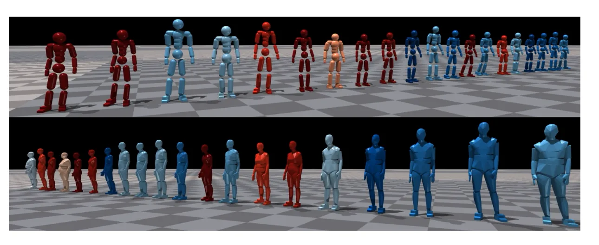
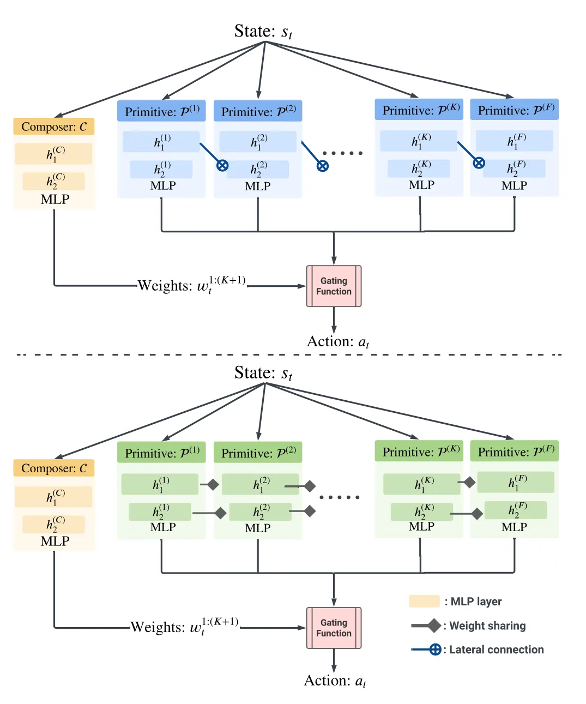
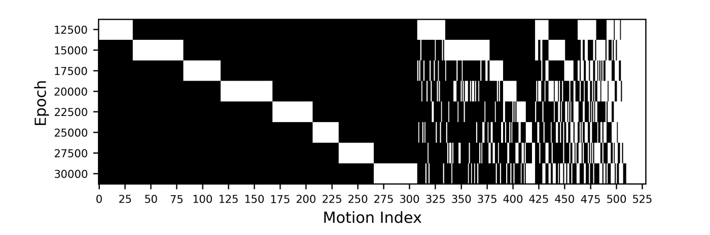

arXiv 2305.06456 · cs.CV · v3 2023 年 9 月 11 日 · ICCV 2023 · 中文精读
Perpetual Humanoid Control for Real-time Simulated Avatars
作者 Zhengyi Luo、Jinkun Cao、Alexander Winkler、Kris Kitani、Weipeng Xu，来自 Meta Reality Labs Research 和 CMU。
关于这份精读。这篇论文在 arXiv 上以 CC BY-NC-SA 4.0 发布（署名、非商业、相同方式共享）。这里按原文顺序覆盖正文五节和附录 A 到 D，小节编号和原文一致，用自己的话整理，不是逐字翻译。公式按原文编号，表格数字照录原文。
图 1 到图 7 从 arXiv PDF 裁切，只做了裁切和格式转换，没有改内容，版权归作者，裁切件沿用同一许可。图下的文字是我写的。本页的“读者注”是整理时核算或对照发现的，不属于论文内容，页尾有汇总。
代码。官方代码是 ZhengyiLuo/PHC，BSD 3-Clause Clear 许可。我读的是当时最新的提交 846988d（2025-08-21），只读，没有运行。这个提交比论文晚近两年，加了后续模型，默认配置不一定是论文实验所用；代码和论文不一致的地方两边都写，3D 动画里也可以切换。
物理仿真的人形如果要用视频或文字生成的姿态来驱动，有两个老问题：单个策略学不全大动作库，输入一带噪声人形就摔，摔了只能重置，而重置又要一个可靠的参考姿态。
PHC 是一个不加外力的人形控制器，只要给下一帧的目标姿态（甚至只给 3D 关键点），它就能一直控制下去，摔倒了自己爬起来，走回参考动作接着做。核心是渐进乘性控制策略（progressive multiplicative control policy，PMCP）：动作越练越难，每到瓶颈就新建一个子网络（primitive）专门学失败的序列，旧的冻结；恢复任务也作为一个 primitive 加进去；最后训练一个 composer 把它们组合起来。
读完我认为最值得记住的三点：单网络为什么学不全，图 7 的阶梯图给出了直接的证据（我认为它的图注把黑白写反了，见读者注 22）；消融里最大的一跳来自渐进训练本身；代码里的 composer 和论文的式 (5)(6) 不是一回事，它把 PPO 的噪声加在权重上，也不做归一化（读者注 11）。

我读了 SuperMimic 的全文，它只在§2 提到 PHC 一次（参考文献 [11]）：把 PHC 放在 DeepMimic 之后，说它把这个范式推到了大动作集并能恢复，接着 SONIC 再把数据、策略容量和算力一起放大。然后说这些方法都要大量仿真和算力，这正是 SuperMimic 要解决的。除此之外没有引用 PHC 的任何公式、网络结构或评测协议。所以从原文看，SuperMimic 没有从 PHC 拿技术，它只是把 PHC 当作“用算力堆大规模跟踪”这条路线的一站。
下表是我从两篇论文各自读出来的对比，不是 SuperMimic 作者的说法。
| PHC | SuperMimic | |
|---|---|---|
| 学习方法 | PPO，无模型 | 穿过学到的世界模型做 BPTT |
| 动作规模 | AMASS 11313 条，论文说约 40 小时 | BONES-SEED 264.56 小时，评测 129,514 条 |
| 怎样覆盖难动作 | 评估后挖掘失败序列，新建 primitive，旧的冻结 | 一个策略；按区间回报重置采样（50/40/10 混合） |
| 防遗忘 | 冻结子网络 | 重置采样里留 10% 给历史权重，让学会的难动作继续练 |
| 恢复能力 | 单独 primitive，point-goal，AMP 约束风格 | 没有恢复 primitive；§4.3 用评论家解决推搡后的站稳，属于策略本身 |
| 风格约束 | AMP 判别器全程参与 | 全文没有判别器或 AMP |
| 算力 | 单张 A100 约 7 天（约 168 GPU 小时），约 100 亿样本 | 1 张 H100 3 小时 |
| 输入和对象 | SMPL 仿真人形，可只要关键点 | Unitree G1 真机，10 帧本体观测 |
两者不能直接比成功率：数据集、人形、成功判据都不同，而且 PHC 的 7 天包含了多个 primitive 分阶段训练。
问题。用视频控制仿真人形时人形常摔，这阻碍了物理方法的普及。第一个难点是模仿器的覆盖率：还没有哪个单策略学全 AMASS（一万条、40 小时）。于是很多工作加外力，比如残差力控制（residual force control，RFC），在根部施加不存在的力帮人形平衡。论文称之为“上帝之手”，会带来漂浮之类的伪影。带 RFC 的模仿器能到 AMASS 的 97%。
第二个难点是输入噪声和失败处理。视频姿态估计里漂浮、脚滑、不可能的姿态很常见。大多数方法在失败时重置人形，但重置要好的参考姿态，噪声输入给不了，于是反复摔倒、重置到不可靠的姿态。
做法。Perpetual Humanoid Controller（PHC）是一个单一策略，高成功率地模仿动作并能自然恢复。它把越来越难的序列看作不同的“任务”，逐步分配新网络容量；全程使用 AMP（对抗动作先验，见 §3.1）保证动作像人；并且可以只用连杆位置作输入，这更容易从视觉 3D 关键点估计或 VR 控制器得到。
三项贡献。
物理动作模仿。现代仿真器大多不可微，只能用 RL，费时费钱，所以多数工作针对小任务。大规模模仿器从单片段（DeepMimic）发展到数据集。ScaDiver 用专家混合扩到 CMU MoCap，按失败时间算约 80%。UniCon 只有定性结果。MoCapAct 先学单片段专家再蒸馏，达到专家性能的约 80%。最接近的是 UHC，学到 AMASS 的 97%，但靠根部的非物理力。
失败恢复。PhysCap 用浮动基座，不需要平衡，也就谈不上物理真实。Egopose 在要摔时重置到运动学姿态，可能瞬移。NeuroMoCon（原文拼写为 NeruoMoCon）用采样式控制，摔了重新采样，不保证成功，也不能实时。额外的恢复策略因为没有参考动作，会产生高频抖动之类的不自然动作。ASE 能自然起身，但动作模仿还要求回到参考动作上，PHC 补了这一步。
渐进强化学习。灾难性遗忘的对策有正则化权重、学多个专家、用专家混合或乘性控制扩容。渐进 RL 蒸馏多个专家，目标是匹配专家的动作分布，不是找最优组合。PNN（渐进神经网络）冻结旧子网络，新建子网络并通过侧向连接转发旧经验，但要手动按任务选子网络，而参考动作没有任务标签，所以不能直接用于模仿。
符号。参考姿态 \(\hat q_t\triangleq(\hat\theta_t,\hat p_t)\)，包括所有 \(J\) 个连杆的 3D 旋转 \(\hat\theta_t\in\mathbb R^{J\times6}\)（6D 旋转表示，Zhou 等）和位置 \(\hat p_t\in\mathbb R^{J\times3}\)。参考速度 \(\hat{\dot q}_t\triangleq(\hat\omega_t,\hat v_t)\) 由有限差分算出。旋转版模仿需要 \(\hat q_{1:T}\)，关键点版只需要 \(\hat p_{1:T}\)。上标约定：波浪号表示姿态估计或生成器给的运动学量，帽子表示动捕真值，不带符号的是物理仿真的量。
任务写成马尔可夫决策过程 \(\mathcal M=\langle\mathcal S,\mathcal A,\mathcal T,\mathcal R,\gamma\rangle\)。仿真决定状态和转移，策略 \(\pi_{\rm PHC}\) 算每步动作，奖励 \(r_t=\mathcal R(s_t,\hat q_t)\)，目标是最大化折扣回报 \(\mathbb E[\sum_{t=1}^T\gamma^{t-1}r_t]\)，用 PPO（近端策略优化，一种无模型策略梯度算法）训练。

状态。\(s_t\triangleq(s^{\rm p}_t,s^{\rm g}_t)\)。本体感觉 \(s^{\rm p}_t\triangleq(q_t,\dot q_t,\beta)\) 含 3D 姿态、速度和可选的体形 \(\beta\)。旋转版的目标状态是下一帧参考和仿真之差，再加上参考本身：
\(\ominus\) 是旋转差。关键点版简化成：
所有量都换到人形当前朝向和根部的局部坐标。
原文 \(s^{\text{g-rot}}_t\) 的第四项写的是 \(\hat\omega_t-\omega_t\)，其余都是 \(t+1\)，文字也说“下一时间步”。代码（humanoid_im.py:752 的 motion_times 取 progress+1，第 1338 行的 ref_body_ang_vel 来自同一次查询）用的是下一帧。我认为是笔误，上式照录原文。
论文没给输入维度。按代码算：本体 \(1+24\times15-3=358\)（根高度加每个身体的位置、旋转、速度、角速度，减去根部位置）；目标 obs_v=6 是 \(24\times24=576\)，正好是上式 6 项 \(6+3+3+3+6+3\)；obs_v=7 是 \(24\times9=216\)，正好是关键点版 3 项。所以旋转版 934 维，关键点版 574 维，都不含 \(\beta\)。带体形时再加 11 维（代码多一维性别）。
奖励。和只用模仿奖励的跟踪方法不同，这里全程加入判别器奖励。AMP（Adversarial Motion Prior，对抗动作先验）的做法是训练一个判别器分辨状态来自动捕还是策略，策略骗过它就得分。论文说这让动作稳定自然，而且对恢复行为尤其关键。总奖励：
能耗惩罚是 \(-0.0005\cdot\sum_{j\in\text{joints}}|\mu_j\omega_j|^2\)，\(\mu_j,\omega_j\) 是关节力矩和角速度，用来防止不加外力时脚部的高频抖动。任务奖励按当前目标切换。模仿任务用：
四项分别度量所有连杆的位移、旋转、线速度和角速度差异。恢复任务的奖励见式 (4)。
代码 compute_imitation_reward（humanoid_im.py:1524）的指数是差的平方，先对 3 个轴取平均，再对身体取平均：exp(-k_pos * (diff**2).mean(-1).mean(-1))。系数 100、10、0.1、0.1 和权重 0.5、0.3、0.1、0.1 都与论文相同。差别不小：每个身体偏 5 cm 时，按论文的范数 \(e^{-100\times0.05}=0.0067\)，按代码 \(e^{-100\times0.05^2/3}=0.92\)。论文写法下，5 cm 的误差几乎拿不到位置奖励，所以我认为是公式省略了平方。第 3 幕可以切换看。论文没说范数怎样在身体之间聚合。
论文是 \(\sum|\mu_j\omega_j|^2\)。代码是 torch.abs(τ*q̇).sum，一次方，上一行注释掉的旧写法才有平方。另外 env 把能耗加进 rew_buf，amp_agent.py:851 再乘 task_reward_w = 0.5，所以式 (1) 里能耗的系数 1 在代码里实际是 0.5。可以对上的一点：式 (4) 的 0.1 倍能耗，配置 env_im_getup_mcp.yaml 的 power_coefficient = 0.00005 正好是默认 0.0005 的 0.1 倍。
论文说判别器的观测、损失形式、梯度惩罚和 AMP 相同。我对照了 AMP 原文：它用最小二乘损失、奖励 \(\max(0,1-0.25(D-1)^2)\)、输入是两帧 \((s_t,s_{t+1})\)。PHC 代码（amp_agent.py:791-798, 864-876）用 BCE、奖励 \(-\log(1-D)\) 再乘 disc_reward_scale = 2，输入 10 帧。论文自己也写 \(D(s^{\rm p}_{t-10:t})\)。梯度惩罚代码里有，disc_grad_penalty = 5。
动作。每个自由度一个 PD 控制器，\(a_t\) 是 PD 目标，令 \(q^d_t=a_t\)，力矩 \(\tau^i=k^p\circ(a_t-q_t)-k^d\circ\dot q_t\)。之前的模仿方法常用残差动作 \(q^d_t=\hat q_t+a_t\) 来加快训练，但 PHC 要对噪声和错误的参考动作鲁棒，所以去掉了这个依赖。不用外力，也不用 meta-PD。
策略和判别器。\(\pi_{\rm PHC}(a_t|s_t)=\mathcal N(\mu(s_t),\sigma)\)，固定对角协方差。AMP 判别器 \(\mathcal D(s^{\rm p}_{t-10:t})\) 根据本体状态给出真假值。所有网络都是两层 MLP，维度 [1024, 512]。
原文写“判别器、primitive、价值函数和判别器”，判别器出现两次，composer 没出现。代码里 composer 也是 [1024, 512]（im_mcp.yaml），所以大概是想写 composer。
人形。可以用任何人体运动学结构，这里用 SMPL：24 个刚体，23 个受驱动，动作空间 \(a_t\in\mathbb R^{23\times3}\)。体形参数 \(\beta\in\mathbb R^{10}\) 改变身体比例。
初始化和放松的早停。训练用 RSI（reference state initialization，从片段的随机位置开始）。早停沿用 UHC：关节全局平均离参考超过 0.5 m 就终止。不同的是去掉了脚踝和脚趾，叫 RET（relaxed early termination）。原因是仿真人形和真人的动力学有差距，真人的脚有多段，盲目跟脚的动作会失去平衡。这些关节仍然拿模仿和判别器奖励，所以不会乱动。这个细节小，但对成功率有帮助。
困难负样本挖掘。后期要多训练难序列才能拿到有信息的经验。方法和 UHC 类似：在整个数据集上评估，模仿失败的就是难序列 \(\hat Q_{\rm hard}\subseteq\hat Q\)。
继续训练时性能会停滞，因为学新序列时会忘旧的。困难挖掘只能缓解。加恢复这样的新任务可能进一步拖累模仿（附录 C）。所以 PMCP 给更难的序列分配新的子网络（primitive \(\mathcal P\)）。

PNN 训练。\(\mathcal P^{(1)}\) 在全部数据 \(\hat Q\) 上用模仿任务训到收敛（\(\hat Q^{(k)}_{\rm hard}\) 上的成功率不再上升）。评估，把它失败的序列组成 \(\hat Q^{(1)}_{\rm hard}\)。冻结 \(\mathcal P^{(1)}\)，新建随机初始化的 \(\mathcal P^{(2)}\)，用侧向连接把 \(\mathcal P^{(1)}\) 每层连到 \(\mathcal P^{(2)}\)。每一轮从上一轮的难序列里选失败的，所以子集越来越小：\(\hat Q^{(k)}_{\rm hard}\subseteq\hat Q^{(k-1)}_{\rm hard}\)。这和 UHC 的挖掘不同，这里每次都新建 primitive。
原版 PNN 面向完全不同的任务（比如不同 Atari 游戏），需要侧向连接选择复用、修改或丢弃旧经验。人体动作高度相关，所以论文也考虑一个变体：没有侧向连接，新 primitive 从上一个的权重初始化。这相当于用新 primitive 微调更难的序列，同时保留 \(\mathcal P^{(k)}\) 已学会的能力。
算法 1：学习 PMCP（编号同原文）
第 19 行用 \(\hat Q^{(k+1)}_{\rm hard}\) 训练 \(\mathcal P^{(k)}\)，但 \(\hat Q^{(k+1)}_{\rm hard}\) 要到第 20 行才算出来，第 16 行也只初始化了 \(\hat Q^{(1)}_{\rm hard}\)。按正文和图 2，应该是用 \(\hat Q^{(k)}\) 训练 \(\mathcal P^{(k)}\)。第 5 行“从 \(\hat Q\) 采样”也应是函数参数 \(\hat Q^{(k)}\)。我把它当笔误。
README 说训练“不算很自动”，需要手动运行 scripts/pmcp/forward_pmcp.py。这个脚本取当前 epoch 向前 12500 以内（每 2500 一次评估，共 6 次）失败序列的并集，写成下一阶段的动作文件，并把第 idx 个 primitive 的权重复制给第 idx+1 个。这对应论文的权重共享。论文只说“评估后失败的序列”，没说取并集。另外配置 auto_pmcp_soft: True 打开时，训练期间还会把失败序列的采样权重调高（motion_lib_base.py:365-384），这是同一个 primitive 内部的挖掘，论文正文没提到这个开关（README 说它 2024 年 2 月才发布）。
失败恢复。除了更难的序列，也学新任务。失败状态分三种：倒在地上；离参考超过 0.5 m；两者同时。这时人形要起身，自然地走向参考动作，然后恢复模仿。在栈的末尾加一个 \(\mathcal P^{(F)}\)，输入输出和其他 primitive 相同。但倒在地上时人形不该模仿参考，所以要从状态里去掉除根部外的参考信息：把非根关节的参考旋转换成仿真值，
这样目标就退化成 point-goal（点目标）：只告诉人形根部目标的相对位置和朝向。太远（超过 5 m）时把 \(\hat p'_t-p_t\) 归一化成 \(5\times(\hat p'_t-p_t)/\|\hat p'_t-p_t\|_2\)，把目标钳住。足够近时切回完整模仿：
倒地状态按 ASE 的办法，开局随机扔到地上。远离状态是在离参考 2 到 5 m 的地方初始化。恢复奖励：
点目标奖励 \(r^{\text{g-point}}_t=d_{t-1}-d_t\)，\(d_t\) 是参考根部和仿真根部的距离。训练 \(\mathcal P^{(F)}\) 用从 AMASS 手选的子集 \(Q^{\rm loco}\)，主要是走路和跑步，这让判别器和 AMP 奖励偏向简单步态。训练 primitive 时不新建价值函数和判别器，持续微调。
代码（846988d）的默认值和论文不同：close_distance 默认 0.25 m（humanoid.py:328），只有 demo 里是 0.5；far_distance 默认 3 m，紧邻的注释却写着“> 5 meters”；点目标奖励是 clamp(d_{t-1}-d_t, max=1/3)*9（humanoid_im.py:897 附近）；并且 d ≤ 0.25 时在点目标奖励之上再加 0.5 倍模仿奖励。代码这些默认值都可以被配置覆盖，我不知道论文实验用的是哪组。再有 getup_schedule：epoch ≤ getup_udpate_epoch 时任务奖励权重置 0、判别器权重 1、全部从倒地开始（amp_agent.py:519-525），论文没写这个分阶段。
还有一点：式 (3) 只看根部 3D 距离，没有单独的“倒地”判据。按代码也是 torch.norm(root_pos - ref_root)。倒地时根部的高度差本身就可能超过阈值，所以这个式子能把倒地也算进去，但这是我的理解，论文没有明说。第 8 幕的 d 这样画，高度差取 0.72 m（我设的）。
乘性控制。现在有了 \(\{\mathcal P^{(1)}\cdots\mathcal P^{(K)},\mathcal P^{(F)}\}\)，每个能模仿数据的一部分。PNN 里任务切换是手动的，但动作的难易边界是模糊的，所以用 MCP（Multiplicative Control Policy）训练一个 composer \(\mathcal C\)，动态组合 primitive。\(\mathcal C(w^{1:K+1}_t|s_t)\) 输入和 primitive 相同，输出权重。PHC 的输出分布：
每个 \(\mathcal P^{(k)}\) 是独立高斯，所以动作分布是：
\(\mu^j_i\) 是 \(\mathcal P^{(i)}\) 的第 \(j\) 维动作。和 top-1 专家混合（MOE，同一时刻只激活一个）不同，MCP 同时激活全部 primitive。和原版 MCP 不同，这里 primitive 是渐进训练的，且 composer 和 primitive 共享输入空间。composer 训练时穿插恢复任务。
式 (5) 里 \(\mathcal C(s_t)\) 同时当归一化常数和指数用，指数也没带下标 \(i\)。在 MCP 原文里归一化常数是 \(Z(s,g)\)，指数是 \(w_i\)。式 (6) 第一个分母的下标是 \(l\)，分子却还写 \(\mathcal C_i\)。这些都按 MCP 读就通。
另外 \(\sigma\) 没有平方，意味着这里的 \(\sigma\) 是方差。我在第 9 幕对 4 个一维高斯当场做了数值积分：把 \(\sigma\) 当方差时，带权连乘的结果和式 (6) 一致（四位小数）。PHC 的 \(\sigma\) 固定且相同，所以式 (6) 退化成 \(\mu=\sum w_i\mu_i/\sum w_i\)、方差 \(\sigma/\sum w_i\)。
这是我认为最值得注意的一处。humanoid_im_mcp.py 里：
self._num_actions = self.num_prim，所以 composer 的 PPO 动作空间是权重本身，高斯噪声（\(\sigma=e^{-2.9}\)）加在权重上，不在关节动作上。step() 里 primitive 只输出确定性的 \(\mu\)，动作是 torch.sum(weights[:, :, None] * x_all, dim=1)，即 \(\sum w_i\mu_i\)，不除以 \(\sum w_i\)。所以式 (6) 在相同 \(\sigma\) 时的“加权平均”和代码的“加权和”只差一个归一化，但这个差别很实在：权重和不是 1 时动作被整体缩放，composer 可以利用这个自由度，比如把各 primitive 的 PD 目标做线性外推。而探索噪声的结构也不同：代码里动作噪声是 \(\sum\epsilon_i\mu_i\)，由各 primitive 的输出张成，不是各维独立。第 9 幕可以切换比较。我没有运行代码，不知道这对成功率的影响有多大。
自己画的 · 11 幕 3D 框架动画
核心框架拆成 11 幕：总览、输入和动作、模仿奖励、AMP、可单步的 PMCP（第 5 幕）、遗忘、权重共享、失败恢复、当场计算的 primitive 组合（第 9 幕）、实时流水线、结果表。可以暂停、拖进度、旋转画面、切换开关。玩具数字是当场算的，标明了哪些是玩具。
PHC 只需要下一帧的参考姿态 \(\tilde q_t\) 或关键点 \(\tilde p_t\)，所以和任务无关，只要与 SMPL 运动学结构兼容的姿态估计器或生成器都能接。视频驱动用 HybrIK 和 MeTRAbs，两者都在公制空间估计，区别是 HybrIK 输出关节旋转，MeTRAbs 只输出 3D 关键点。语言驱动用 MDM，它生成互不相连的片段，靠控制器的恢复能力接起来。
基线。UHC 官方实现，带和不带 RFC 都比。
实现细节。所有评估都用 4 个 primitive（含恢复）。单张 NVIDIA A100，训练全部 primitive 和 composer 约一周。训练好后组合策略超过 30 FPS。物理用 Isaac Gym，控制 30 Hz，仿真 60 Hz。评估不考虑体形变化，用平均 SMPL 体形。所有实验跑三次取平均。
数据集。在 AMASS 训练集上训练。按 UHC 去掉噪声和人物交互的序列，得到 11313 条训练序列和 140 条测试序列。用 Human3.6M（H36M）评估未见过的动捕和估计姿态，分出 H36M-Motion*（全 H36M 中 140 条高质量动捕）和 H36M-Test-Video*（测试集视频估计出的 160 条噪声姿态）。星号表示去掉了人和椅子交互的序列。
指标。成功率 Succ 沿用 UHC：模仿中任一时刻身体关节平均离参考超过 0.5 m 就算失败。\(E_{\rm mpjpe}\) 是根相对的平均关节位置误差，\(E_{\rm g\text-mpjpe}\) 是全局的，单位 mm。\(E_{\rm acc}\)（mm/帧²）和 \(E_{\rm vel}\)（mm/帧）比较仿真和动捕的加速度、速度。因为都做了物理仿真，就不报脚滑和穿透。
表 1 · 模仿动捕序列（照录原文。* 去掉人物交互；AMASS-Train*、AMASS-Test*、H36M-Motion* 分别是 11313、140、140 条）
| 方法 | RFC | AMASS-Train* | AMASS-Test* | H36M-Motion* | ||||||||||||
|---|---|---|---|---|---|---|---|---|---|---|---|---|---|---|---|---|
| Succ ↑ | Eg-mpjpe ↓ | Empjpe ↓ | Eacc ↓ | Evel ↓ | Succ ↑ | Eg-mpjpe ↓ | Empjpe ↓ | Eacc ↓ | Evel ↓ | Succ ↑ | Eg-mpjpe ↓ | Empjpe ↓ | Eacc ↓ | Evel ↓ | ||
| UHC | ✓ | 97.0% | 36.4 | 25.1 | 4.4 | 5.9 | 96.4% | 50.0 | 31.2 | 9.7 | 12.1 | 87.0% | 59.7 | 35.4 | 4.9 | 7.4 |
| UHC | ✗ | 84.5% | 62.7 | 39.6 | 10.9 | 10.9 | 62.6% | 58.2 | 98.1 | 22.8 | 21.9 | 23.6% | 133.14 | 67.4 | 14.9 | 17.2 |
| Ours | ✗ | 98.9% | 37.5 | 26.9 | 3.3 | 4.9 | 96.4% | 47.4 | 30.9 | 6.8 | 9.1 | 92.9% | 50.3 | 33.3 | 3.7 | 5.5 |
| Ours-kp | ✗ | 98.7% | 40.7 | 32.3 | 3.5 | 5.5 | 97.1% | 53.1 | 39.5 | 7.5 | 10.4 | 95.7% | 49.5 | 39.2 | 3.7 | 5.8 |
高质量动捕。和带 RFC 的基线比，几乎所有指标都更好。不带外力的 UHC 在测试集上差很多，加速度误差也大得多，因为它靠高频抖动保持平衡。PHC 的加速度误差低，论文归功于能耗惩罚和动作先验。关键点版和旋转版差不多，有时还更好。
全局误差应该不小于根相对误差的量级：表 1 其他所有列都是 \(E_{\rm g\text-mpjpe}>E_{\rm mpjpe}\)，唯独 UHC 不带 RFC 的 AMASS-Test* 是 58.2 对 98.1。这两个数像是互换了。数学上全局误差小于根相对并非不可能，所以我只说“可疑”，没有办法验证。同一行的 133.14 还多一位小数。
表 2 · 模仿噪声动作（照录原文。H36M-Test-Video*）
| 方法 | RFC | 姿态估计 | Succ ↑ | Eg-mpjpe ↓ | Empjpe ↓ |
|---|---|---|---|---|---|
| UHC | ✓ | HybrIK + MeTRAbs (root) | 58.1% | 75.5 | 49.3 |
| UHC | ✗ | HybrIK + MeTRAbs (root) | 18.1% | 126.1 | 67.1 |
| Ours | ✗ | HybrIK + MeTRAbs (root) | 88.7% | 55.4 | 34.7 |
| Ours-kp | ✗ | HybrIK + MeTRAbs (root) | 90.0% | 55.8 | 41.0 |
| Ours-kp | ✗ | MeTRAbs (all keypoints) | 91.9% | 55.7 | 41.1 |
视频噪声输入。用 H36M 测试集图像，HybrIK 给关节旋转，MeTRAbs 给关键点，再做高斯滤波。两者都是逐帧模型，不用时序信息。单目深度歧义让全局姿态噪声很大。MeTRAbs 的全局根部估计更好，所以用它的根加 HybrIK 的旋转。PHC 明显超过基线，约 90%。关键点版比旋转版好，论文给了两个解释：关键点比关节旋转好估计，所以 MeTRAbs 质量更高；关键点版可以用任意关节配置去匹配关键点，对噪声更宽容。
表 3 · 消融，用 HybrIK + MeTRAbs (root) 的噪声姿态，H36M-Test-Video*（照录原文）
| 行 | RET | MCP | PNN | Rotation | Fail-Recover | Succ ↑ | Eg-mpjpe ↓ | Empjpe ↓ |
|---|---|---|---|---|---|---|---|---|
| R1 | ✗ | ✗ | ✗ | ✓ | ✗ | 51.2% | 56.2 | 34.4 |
| R2 | ✓ | ✗ | ✗ | ✓ | ✗ | 59.4% | 60.2 | 37.2 |
| R3 | ✓ | ✓ | ✗ | ✓ | ✗ | 66.2% | 59.0 | 38.3 |
| R4 | ✓ | ✓ | ✓ | ✓ | ✗ | 86.9% | 53.1 | 33.7 |
| R5 | ✓ | ✓ | ✓ | ✓ | ✓ | 88.7% | 55.4 | 34.7 |
| R6 | ✓ | ✓ | ✓ | ✗ | ✓ | 90.0% | 55.8 | 41.0 |
消融。R1→R2：RET 让策略能用脚踝和脚趾平衡。R2→R3：不做渐进训练，只用 MCP，因为容量更大而变好。R3→R4：PMCP 大幅提升。R4→R5：加入恢复能力没有损害模仿。R5→R6：关键点版和旋转版持平。
表 3 的 R5、R6 和表 2 的 Ours、Ours-kp 完全相同；表 3 R2 和表 6 第 4 行（1 个 primitive）也相同；表 3 R5 和表 6 R7 也相同。
奇怪的是：论文说所有实验跑三次取平均，但 H36M-Test-Video*（160 条）上的成功率几乎都正好落在 \(k/160\) 上，比如 88.7（142/160 = 88.75，截断）、90.0（144/160）、91.9（147/160）、59.4（95/160）。表 1、2、3、6 里以 140 或 160 条为分母的成功率，去掉跨表重复后有 23 个，其中 20 个按四舍五入或截断能写成单次的 \(k/N\)，只有 62.6、87.0（表 1）和 80.9（表 6）不行。如果三次都有波动，平均后不太会都落在这个格子上。这说明三次结果基本相同，或者其实只取了一次。这是我的推断。我没有拿到逐次结果。
R1→R2 成功率涨 8.2 个点，但全局误差从 56.2 变大到 60.2，根相对从 34.4 变大到 37.2。原因可能是原本中途失败的难序列现在被计入了误差平均，也可能是脚的放松真的带来偏差，论文没有分析。评测时是否也排除脚踝和脚趾，论文没写；代码在 reset_bodies 上算早停（humanoid_im.py:1173），im_eval（且未开 strict_eval）时取平均。
实时仿真人形。用关键点版控制器加流式的 MeTRAbs，演员摆姿势、跳，控制器保持稳定。图 4 还显示了 MDM 生成的动作。

评测恢复能力：看能否在一定时间内回到参考动作。三种情形：倒地、远离、两者同时。用一段站立不动的参考，把人形扔到地上并施加 150 步随机力矩制造倒地，初始化到 3 m 外制造远离。随机 1000 次。
表 4 · 恢复成功率（照录原文）
| 方法 | Fallen-State | Far-State | Fallen + Far-State | |||
|---|---|---|---|---|---|---|
| Succ-5s ↑ | Succ-10s ↑ | Succ-5s ↑ | Succ-10s ↑ | Succ-5s ↑ | Succ-10s ↑ | |
| Ours | 95.0% | 98.8% | 83.7% | 99.5% | 93.4% | 98.8% |
| Ours-kp | 92.5% | 94.6% | 95.1% | 96.0% | 79.4% | 93.2% |
论文说两种控制器都能以高成功率（>90%）恢复，即使在倒地加远离的情形。
“>90%”只在 10 秒的那几列全部成立；5 秒的 Ours Far-State 是 83.7%，Ours-kp 两者同时是 79.4%。
更奇怪的是 Ours 这一行：只是远离的 5 秒成功率（83.7%）比又倒地又远离的（93.4%）低将近 10 个点，后者任务明显更难。Ours-kp 没有这个反常。论文没有讨论。我没有办法判断原因，也可能是数字写错了。
局限。训练集上还到不了 100%。高跳、后空翻这样高动态的动作仍然困难。单独用单片段控制器可以过拟合它们，但完整控制器常学不会。作者猜测这些动作需要更多规划和意图（比如助跑后跳高），而单帧目标 \(\hat q_{t+1}\) 传递不了这些。渐进训练耗时也长。视频估计器不知道物理仿真的存在，这种分离可能不够，需要和姿态估计、语言生成更紧地结合。
结论和未来工作。PHC 是通用的物理模仿器，模仿质量高，能从失败中恢复，对视频噪声鲁棒，能不重置地实时驱动。未来方向：学会训练集的全部序列；加入地形和场景感知，做人物交互；和下游任务更紧地结合。
附录包括 B 的实现细节、C 的补充消融、D 的局限讨论。定性结果在项目主页。
人形构建。用 SMPL 结构，原生支持不同体形，也是姿态估计文献的通用选择。两种：胶囊体（简单几何体，易仿真）和网格体（按 SimPoE 的方法，每个部位取骨骼对应顶点的凸包，更贴合体形，便于复杂交互）。两者性能差别不大，所有实验都用胶囊体。为公平比较，评估用中性性别的平均体形。按比例设定密度，身体平均 70 kg。除父子关节外，所有关节对都开碰撞；人形之间的碰撞可开可关。

训练过程。从当前训练集 \(\hat Q^{(k)}\) 随机采样动作，用 \(\hat\theta_{1:T}\) 做正向运动学，按仿真体形归一化。同 UHC，调整根部高度，让脚在回合开始时着地。并行 1536 个人形，训练 primitive 和 composer 都一样。约 7 天采集约 100 亿样本。训练不同体形时从 AMASS 采样合法体形。超参数见表 5。
表 5 · PHC 超参数（照录原文。\(\sigma\)：策略的固定方差，\(\gamma\)：折扣，\(\epsilon\)：PPO 裁剪范围）
| Batch Size | Learning Rate | \(\sigma\) | \(\gamma\) | \(\epsilon\) | |
|---|---|---|---|---|---|
| Value | 1536 | \(5\times2^{-5}\) | 0.05 | 0.99 | 0.2 |
| \(w_{\rm jp}\) | \(w_{\rm jr}\) | \(w_{\rm jv}\) | \(w_{\rm j\omega}\) | ||
| Value | 0.5 | 0.3 | 0.1 | 0.1 |
100 亿样本 / 7 天 = 16,534 样本/秒；除以 1536 个人形，每个人形约 10.8 步/秒。控制频率 30 Hz，所以整体大约是实时速度的 0.36 倍（含更新、评估时间）。按代码的 horizon 32，约 \(10^{10}/(1536\times32)\approx203{,}451\) 个 epoch，和 forward_pmcp.py 默认 epoch 200000 同一量级。这些数彼此说得通。
数据准备。同 UHC，过滤掉坐椅子、跑步机、靠桌子、上楼梯、浮空等序列，得到 11313 和 140 条。用启发式过滤，比如识别坐姿的关节配置、统计连续离地帧数。
运行速度。带仿真和渲染实时约 32 FPS，不带渲染约 50 FPS。
模型大小。4 个 primitive 的最终模型 28.8 MB，和 UHC 的 30.4 MB 差不多。
按读者注 2 的 934 维输入：每个 primitive \((934\times1024+1024)+(1024\times512+512)+(512\times69+69)=1{,}517{,}637\) 个参数；composer 输出 4 维，\(1{,}484{,}292\) 个。4 个 primitive 加 composer 共 7,554,840 个，float32 下 \(7{,}554{,}840\times4/2^{20}=28.82\)。正好对上 28.8（作者用的单位其实是 MiB）。这也支持“最终模型 = 4 个 primitive + composer，不含价值函数和判别器”，以及代码的维度和论文实验一致。
§C.2 说表 6 的推理速度“计算网络推理和仿真时间”，那列是 32 FPS；B.1 说约 32 FPS 是“带仿真和渲染”，不带渲染约 50 FPS。如果 C.2 的说法准确，不带渲染也只有 32，和 B.1 的 50 不合。两处的算法不一样，读数时要注意。§4 只写了“超过 30 FPS”。
视频驱动。先用 YOLOv8 检测人。MeTRAbs 在绝对全局空间算 3D 关键点；HybrIK 算关节角和根部位置，关键点可由正向运动学恢复。两者都因果（只用当前帧及以前）、不用时序信息、约 30 FPS。关键点比关节角好估计，HybrIK 也是先估关键点，再用学到的逆运动学得到关节角。MeTRAbs 配关键点版，HybrIK 配旋转版，经验上 MeTRAbs 更稳更准。
多人场景用 OC-SORT 跟踪，打开人形之间的碰撞。实时的额外挑战是检测、姿态估计、仿真都要约 30 FPS，帧率小幅波动就可能不稳。为了平滑深度噪声，用高斯滤波处理 \(t-120\) 到 \(t\) 的估计，边界用 mirror 填充。
代码 humanoid_im_mcp_demo.py 的缓存是 deque(maxlen=30)，不是 120。\(\sigma\) 分维度：根的一个维度 10、另两个 5、关节 2（第 278-284 行），论文没给 \(\sigma\)。第 10 幕用合成噪声试了这件事：只取窗口最后一个值时，mirror 填充会带来滞后。\(\sigma=5\) 时差分速度的 RMS 从 2.80 降到 0.38 m/s，但位置 RMS 反而从 6.3 升到 6.9 cm。这是我的玩具信号，不是 MeTRAbs 的噪声，只说明滤波有取舍。PHC 依赖差分算参考速度（附录 D），可能因此更在意速度。
语言驱动。MDM 默认生成 3D 关键点，接关键点版。它生成定长片段，通常需要混合才能连接。PHC 能自己走到远处的参考，所以可以直接串起多段 MDM 的输出，让一连串文本驱动一个仿真人形。
流程同 §3.2。给定层权重 \(W^{(k)}_i\)、激活函数 \(f\)、可学习的侧向连接权重 \(U^{(j:k)}_i\)，第 \(k\) 个 primitive 第 \(i\) 层的隐藏激活：
除第一层外，每层都接收前面列的上一层激活，经 \(U\) 处理。不用原论文的适配层。另一种办法是权重共享：用上一个 primitive 的权重热启动。训练同样的困难挖掘时两者同样有效，因为每个新 primitive 都增加了能模仿的序列。权重共享大幅缩短训练时间，因为策略开始学难序列时已有基本运动能力。主实验都用权重共享。

pnn.py 的侧向连接只作用到第二层：输出层那部分被注释掉了（“disable action space transfer”），实际只有从 \(h_1\) 到 \(h_2\) 的矩阵。和式 (7) 的“每一层”相比少了输出层。按它算，每对列多一个 \(1024\times512\) 矩阵，4 列 6 对，多 3,145,728 个参数，约 12 MiB。第 7 幕会把总大小算给你看。这个数是我算的，论文没给。默认配置 has_lateral: False。
学大动作库的主要问题是遗忘。图 7 画出训练中策略失败的序列，只画这段时间内失败过的 529 条。从第 12.5k epoch 开始，每次评估都显示学会了一些，又忘了一些。阶梯状说明学习先前失败的序列时，已学会的序列被忘掉。数字上，每次评估的失败序列约有 30% 重叠（右端），这 30% 是后空翻、侧手翻和杂技，一起训练时一直学不会。作者猜测这些序列（约 40 条）需要额外的序列级信息才能和其他序列一起学。

我读了 PDF 里嵌入的位图（2844×951 像素），按刻度校准，每条序列约 4.7 像素宽，取每格中心。
所以我认为实际是白 = 失败，图注写反了。这也让“阶梯”的含义变清楚：每次评估都有一批新序列掉下来。
另一个差别：一直是白色的只有 18 条（序号 511 到 528），图注说 30 条，C.1 正文说“约 40 条”。取样可能有一两条的出入，但差不到 12 条。第 6 幕有这张图的重画，玩具的对照也在那里。
恢复任务也会造成遗忘。在 H36M-Test-Video 上评估 \(\mathcal P^{(F)}\)：Succ 42.5%、\(E_{\rm g\text-mpjpe}\) 87.3、\(E_{\rm mpjpe}\) 55.9，明显低于单 primitive \(\mathcal P^{(1)}\) 的 Succ 59.4%、\(E_{\rm g\text-mpjpe}\) 60.2、\(E_{\rm mpjpe}\) 34.4。所以模仿和恢复要分开。
这里写 \(\mathcal P^{(1)}\) 的 \(E_{\rm mpjpe}\) 是 34.4，但表 3 R2 和表 6 里相同的 59.4% / 60.2 那一行都是 37.2。34.4 是表 3 R1（不带 RET）的值。应该是抄错了行。
都用旋转版，都以 \(\mathcal P^{(F)}\) 作为最后一个 primitive。FPS 计网络推理和仿真时间。
表 6 · 补充消融，HybrIK + MeTRAbs (root)，H36M-Test-Video*（照录原文；行号 R1 到 R8 是我加的，按原文讨论的顺序）
| 行 | PNN-Lateral | PNN-Weight | MOE | MCP | Type | # Prim | Succ ↑ | Eg-mpjpe ↓ | Empjpe ↓ | FPS |
|---|---|---|---|---|---|---|---|---|---|---|
| R1 | ✓ | ✗ | ✗ | ✗ | Cap | 4 | 87.5% | 55.7 | 36.2 | 32 |
| R2 | ✗ | ✓ | ✓ | ✗ | Cap | 4 | 87.5% | 56.3 | 34.3 | 33 |
| R3 | ✗ | ✓ | ✗ | ✓ | Mesh | 4 | 86.9% | 62.6 | 39.5 | 30 |
| R4 | ✗ | ✗ | ✗ | ✗ | Cap | 1 | 59.4% | 60.2 | 37.2 | 32 |
| R5 | ✗ | ✓ | ✗ | ✓ | Cap | 2 | 65.6% | 58.7 | 37.3 | 32 |
| R6 | ✗ | ✓ | ✗ | ✓ | Cap | 3 | 80.9% | 56.8 | 36.1 | 32 |
| R7 | ✗ | ✓ | ✗ | ✓ | Cap | 4 | 88.7% | 55.4 | 34.7 | 32 |
| R8 | ✗ | ✓ | ✗ | ✓ | Cap | 5 | 87.5% | 57.7 | 36.0 | 32 |
侧向连接 vs. 权重共享（R1 vs. R7）：表现相近，权重共享是有效的替代。可能因为这里的“任务”相似，不需要侧向连接来选择经验。
MOE vs. MCP（R2 vs. R7）：top-1 MOE 略差。primitive 冻结后，理论上完美的 composer 对两者都能选到最好的 primitive。MCP 能同时激活全部，搜索更大的动作空间，所以更好，但 MOE 差得不远。CoMic 也观察到混合和乘积分布表现接近。top-inf MOE 和 MCP 相似。
胶囊 vs. 网格（R3 vs. R7）：表现接近，网格稍慢（30 对 32 FPS）。
primitive 数量（R4 到 R8）：论文说性能随数量增长。\(\mathcal P^{(F)}\) 不提升模仿，所以 R5 与没用 PMCP 的 R4 接近；从 2 到 3 增长最快；网络不大，推理速度变化不明显。\(\hat Q^{(k)}\) 越来越难，\(\hat Q^{(4)}\) 主要是跳高、后空翻和侧手翻，单独训练可以过拟合，放在一起很难。这些动作要特定的准备步骤，经验会互相矛盾：跳高要助跑，侧手翻要另一种脚步。逐帧策略没有序列级信息，难以兼顾，所以可能需要未来信息。4 个 primitive 在时间和性能上最划算，主实验用 4 个。
失败案例。98.9% 能模仿大多数日常动作，后空翻这样的动态动作仍困难。实时用例比离线明显差，原因有三：
需要姿态估计器和控制器更深地结合。没有显式考虑相机位姿，假设摄像头水平、没有俯仰和横滚，相机高度在开始时手动调整。恢复的自然程度也可以提升：走路步态、速度和节奏有明显伪影，比如不对称（AMP 的已知问题）。从恢复切回模仿时人形可能突然一抖。需要进一步研究，比如比 point-goal 更好的奖励、补充轨迹观测。
讨论。PHC 配实时姿态估计器可用于视频驱动，配语言模型可驱动文本动作、做动作补间，未来可用于虚拟临场和具身智能体。PMCP 可以作为渐进 RL 和多任务学习的通用框架。还表明可以只用 3D 关键点输入：相当于用 PHC 做基于关键点的逆运动学，并用物理规律约束输出。
代码 README 的结果表还列了论文之后的模型：PHC 98.9%，PHC+（在 PULSE 里）100%，PHC-Prim（单 primitive）99.9%，PHC-Fut（用未来帧）100%。README 明确写：MCP 和专家混合对高成功率很好，但不是 PHC 工作所必需的，单 primitive 也能达到高成功率，只是没有恢复能力；并提到 auto_pmcp_soft 这个训练过程不用 PNN 也能得到很高性能。这些数字我没有运行验证，协议和本文可能不完全相同（G-MPJPE 也从 37.5 降到 25.9，说明模型也变了）。如果它们成立，图 7 显示的遗忘问题后来主要靠软采样解决了，PMCP 的主要优势会更多落在“加新任务而不忘”这一边。这是我的推断。它也和 SuperMimic 单策略加重置采样的路线是一致的。
以下各条都是本页加的核算或对照，不属于论文内容。点编号跳到对应位置。
论文没写、我也没找到的：\(Q^{\rm loco}\) 的具体序列清单和各阶段 \(\hat Q^{(k)}\) 的大小（代码里脚本会生成，但结果不在仓库）；PD 增益在论文里没给（在代码的 MJCF 和 smpl_local_robot 里）；AMASS 上 RET 和早停的完整评测协议。
文中提到的数据集、仿真器和方法。除了标注的以外，链接在 2026 年 11 月 6 日用脚本核对都返回 200。
| 名称 | 是什么 | 主页 | 论文 |
|---|---|---|---|
| PHC | 本文 | 代码 | 2305.06456 |
| AMASS | 动捕合集，训练用 | amass.is.tue.mpg.de | Mahmood 等，ICCV 2019 |
| Human3.6M | 姿态数据集，评测用 | vision.imar.ro/human3.6m | Ionescu 等，TPAMI 2014 |
| CMU MoCap | 动捕库，相关工作提到（https 版脚本超时，http 版 200） | mocap.cs.cmu.edu | – |
| SMPL | 人体模型 | smpl.is.tue.mpg.de | Loper 等，TOG 2015 |
| Isaac Gym | GPU 物理仿真器 | developer.nvidia.com/isaac-gym | 2108.10470 |
| UHC | 基线 | github.com/ZhengyiLuo/UniversalHumanoidControl | 2106.05969 |
| RFC | 残差力控制 | – | 2006.07364 |
| AMP | 对抗动作先验 | – | 2104.02180 |
| ASE | 对抗技能嵌入，倒地初始化的来源 | 代码 | 2205.01906 |
| MCP | 乘性组合策略 | – | 1905.09808 |
| PNN | 渐进神经网络 | – | 1606.04671 |
| PPO | 强化学习算法 | – | 1707.06347 |
| HybrIK | 关节旋转估计 | github.com/Jeff-sjtu/HybrIK | 2011.14672 |
| MeTRAbs | 3D 关键点估计 | github.com/isarandi/metrabs | 2007.07227 |
| MDM | 文本生成动作 | github.com/GuyTevet/motion-diffusion-model | 2209.14916 |
| YOLOv8 | 人体检测 | github.com/ultralytics/ultralytics | – |
| OC-SORT | 多目标跟踪 | github.com/noahcao/OC_SORT | 2203.14360 |
| PULSE | 作者后续工作，README 的 PHC+ 来自这里 | 代码 | 2310.04582 |